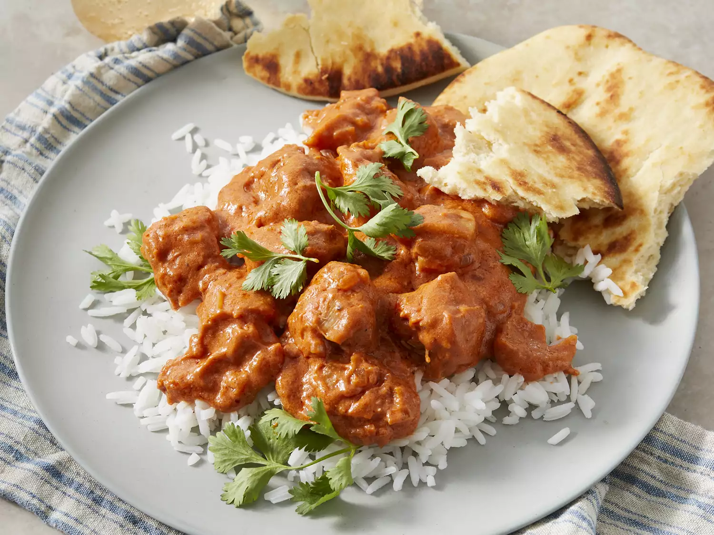

Indian Butter Chicken

Imagine a velvety crimson sauce, rich with butter and the sweet tang of
tomatoes, clinging to tender chunks of tandoori-kissed chicken. Aromas of
warm spices, like cardamom and garam masala, dance in the air, promising a
taste of Northern India. This, my friend, is butter chicken, a culinary
masterpiece that marries vibrant flavors and textures in every bite. The
chicken, marinated in yogurt and spices, carries a hint of smoky char from
the tandoor, while the silky sauce offers a creamy counterpoint, its
sweetness balanced by a whisper of heat. Each scoop onto fluffy naan or
fragrant rice is a journey for the senses, a testament to the magic of
Indian cuisine. So, close your eyes, take a bite, and let butter chicken
transport you to a land where spices sing and every mouthful is a
celebration.
Ingredients
- 2 tablespoons peanut oil, divided
- 1 shallot, finely chopped
- ¼ white onion, chopped
- 2 tablespoons butter
- 1 tablespoon ginger garlic paste
- 2 teaspoons lemon juice
- 2 teaspoons garam masala, divided
- 1 teaspoon chili powder
- 1 teaspoon ground cumin
- 1 bay leaf
- 1 cup tomato puree
- 1 cup half-and-half
- ¼ cup plain yogurt
- 1 pinch salt and ground black pepper to taste
-
1 pound boneless, skinless chicken thighs, cut into bite-size pieces
- ¼ teaspoon cayenne pepper, or to taste
- 1 tablespoon cornstarch
- ¼ cup water
Steps
-
Heat 1 tablespoon oil in a large saucepan over medium-high heat. Sauté
shallot and onion until soft and translucent, about 5 minutes.
-
Stir in butter, ginger-garlic paste, lemon juice, 1 teaspoon garam
masala, chili powder, cumin, and bay leaf. Cook and stir for 1 minute.
Add tomato sauce, and cook for 2 minutes, continuing to frequently stir.
-
Stir in half-and-half and yogurt. Reduce heat to low, and simmer for 10
minutes, frequently stirring. Season with salt and pepper. Remove from
heat and set aside.
-
Heat remaining 1 tablespoon oil in a large heavy skillet over medium
heat. Cook chicken until lightly browned, about 10 minutes.
-
Reduce heat, and season with remaining 1 teaspoon garam masala and
cayenne. Stir in a few spoonfuls of sauce, and simmer until liquid has
reduced, and chicken is no longer pink. Add cooked chicken into sauce
and stir together
-
Dissolve cornstarch into water, then mix into the sauce. Cook for 5 to
10 minutes, or until thickened.
- Serve over rice with naan.